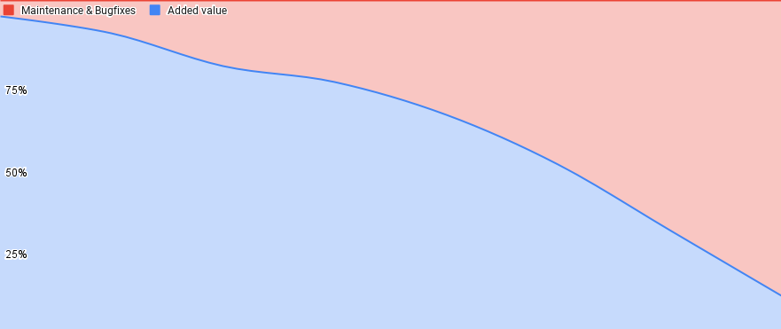

We negotiate scope, not quality
Our work happens in a triangle of quality, time and scope. High quality standards are essential for keeping our pace and not make the lives of our future selves harder. We deliberately limit time to maintain our focus. This leaves us with one variable: scope. We should always strive to find the smallest possible scope to meet the needs of our customers and ourselves. We do this constantly before and also while we work on something 1.
Quality is not optional
Making sacrifices on the quality of the solutions we build always comes at a price. "Technical debt" is a common term in software development, and using it bears the risk of normalizing the violation of the rules we established for good reasons. "Debt" implies that we have taken a loan that we need to pay back some time in the future, but everyone working in this field has made the experience that that happens very rarely. Ultimately that means the negative effects of those quality cuts (e.g. missing tests or incomplete automation) will accumulate to an extent that will almost completely keep us busy with maintenance and a never-ending input stream of bugs.

Low quality releases will gradually lead to a high share of maintenance and bug-fixing, limiting us in delivering value for our customers. Adding value can then only be accomplished by adding more Software Engineers to the teams, which introduces new problems. Onboarding new people to a legacy codebase can take time and is not very motivating, but keeping the standing team busy with maintenance and letting the new people build shiny new stuff will also lead to a significant drop in motivation. So our goal must be to keep maintenance load on a reasonable level instead.
Not only do bugfixes become incredibly expensive in terms of effort and customer impact when they are discovered after release2, but they destroy our focus. Some bugs can seemingly wait, so we dump them into backlogs, hoping to get to them at some point, but in the end that is a fight we can only lose. The better we shape our solutions and the closer we work together on them from the very beginning (read: before writing any code), the better the outcome will be.
1. https://basecamp.com/shapeup/1.2-chapter-03#fixed-time-variable-scope ↩
2. https://deepsource.io/blog/exponential-cost-of-fixing-bugs/ ↩